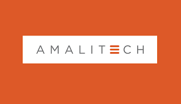
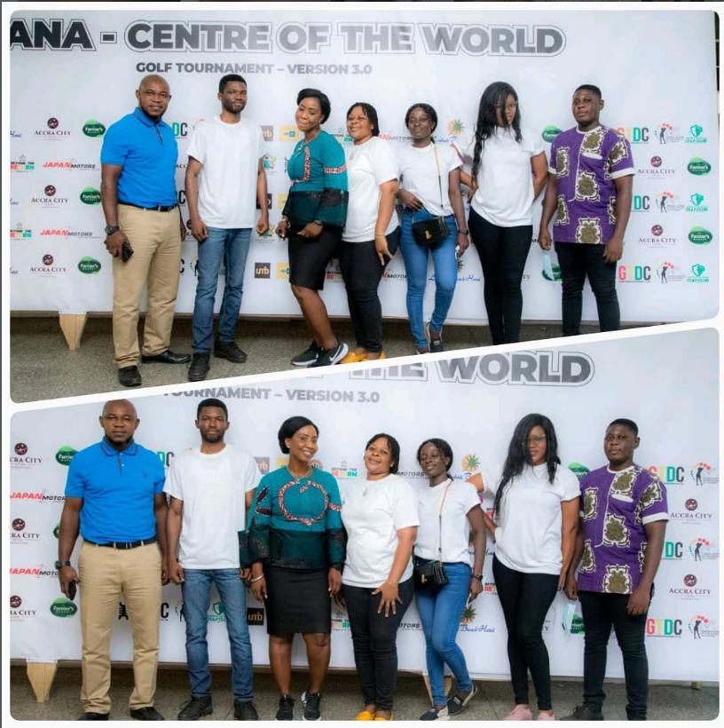
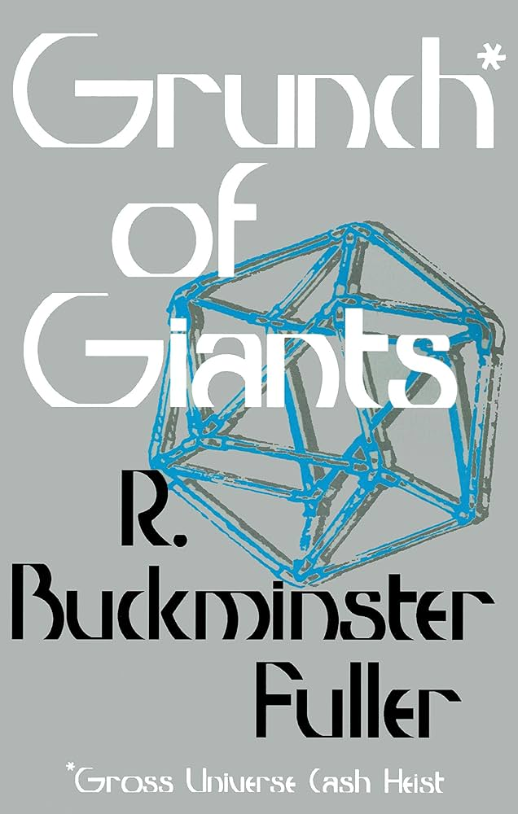

Software Developer | AI Enthusiast | Prompt Engineering Expert
Solomon Yaw
Adeklo
"I am a multidisciplinary technology professional driven by a deep passion for solving real-world problems through software, systems thinking, and artificial intelligence. My journey spans from grassroots practical work to advanced digital innovation, shaping a unique perspective on technology and society."
01. Introduction
About Me
Solomon Yaw Adeklo is a software developer, AI enthusiast, prompt engineering expert, systems theorist, and data analyst with a strong interdisciplinary foundation.
His intellectual curiosity spans across multiple domains including Economics, Geography, African History, Political Science, Sociology, Philosophy, and Psychology. This broad knowledge base allows him to approach problems holistically, combining analytical reasoning with creative and systems-level thinking.
He is deeply passionate about using technology not just as a tool, but as a transformative force capable of solving complex societal challenges.
"Technology is a transformative force capable of solving complex societal challenges."
Core Philosophy
Approaching problems holistically by combining analytical reasoning with creative and systems-level thinking.
02. Academic Journey
Education
Tema Secondary School
General Arts
Developed a strong academic foundation through electives in Economics, Geography, and Elective Mathematics.
This early exposure shaped his analytical thinking and understanding of socio-economic systems.
University for Development Studies (2009-2011)
BA Integrated Development Studies (I did not graduate)
Interdisciplinary program across Economics, Environmental Studies, Social/Political Studies, Planning, and Communication.
- 𝟏. 𝐃𝐞𝐩𝐚𝐫𝐭𝐦𝐞𝐧𝐭 𝐨𝐟 𝐄𝐜𝐨𝐧𝐨𝐦𝐢𝐜𝐬 & 𝐄𝐧𝐭𝐫𝐞𝐩𝐫𝐞𝐧𝐞𝐮𝐫𝐬𝐡𝐢𝐩 𝐃𝐞𝐯𝐞𝐥𝐨𝐩𝐦𝐞𝐧𝐭.
- 𝟐. 𝐃𝐞𝐩𝐚𝐫𝐭𝐦𝐞𝐧𝐭 𝐨𝐟 𝐄𝐧𝐯𝐢𝐫𝐨𝐧𝐦𝐞𝐧𝐭𝐚𝐥 & 𝐑𝐞𝐬𝐨𝐮𝐫𝐜𝐞 𝐒𝐭𝐮𝐝𝐢𝐞𝐬.
- 𝟑. 𝐃𝐞𝐩𝐚𝐫𝐭𝐦𝐞𝐧𝐭 𝐨𝐟 𝐒𝐨𝐜𝐢𝐚𝐥, 𝐏𝐨𝐥𝐢𝐭𝐢𝐜𝐚𝐥 & 𝐇𝐢𝐬𝐭𝐨𝐫𝐢𝐜𝐚𝐥 𝐒𝐭𝐮𝐝𝐢𝐞𝐬.
- 𝟒. 𝐃𝐞𝐩𝐚𝐫𝐭𝐦𝐞𝐧𝐭 𝐨𝐟 𝐏𝐥𝐚𝐧𝐧𝐢𝐧𝐠, 𝐋𝐚𝐧𝐝 𝐄𝐜𝐨𝐧𝐨𝐦𝐲 & 𝐑𝐮𝐫𝐚𝐥 𝐃𝐞𝐯𝐞𝐥𝐨𝐩𝐦𝐞𝐧𝐭 (𝐃𝐏𝐋𝐄𝐑𝐃).
- 𝟓. 𝐃𝐞𝐩𝐚𝐫𝐭𝐦𝐞𝐧𝐭 𝐨𝐟 𝐂𝐨𝐦𝐦𝐮𝐧𝐢𝐜𝐚𝐭𝐢𝐨𝐧 𝐒𝐭𝐮𝐝𝐢𝐞𝐬.
The program (run by the Faculty of Integrated Development Studies, FIDS) operated through five departments:
The Third Trimester Field Practical Programme (TTFPP)
I embacked on a community-based experiential learning program at Old Buipe, Northern Region of Ghana in 2010 while at UDS.
- Applied Geography knowledge in a practical setting during the research
- Designed a village map without surveying equipment
- Documented natural resources within the community on the map I created
- Documented the history of the indigenes of Old-Buipe using oral history which I documented with my research team
- Me and my team went for a resource document (which contain info on resources like gold,limestone etc) from the Central Gonja District Assembly and that informed my me together with my resaerch team on the natural resource reserves found in Buipe town and the Savannah Region as a whole
Valley View University
BSc Information Technology
I was Introduced to GitHub in 2016 by a lecturer at Valley View University, Abandor Sam,during a semester course in Distributed Computer Systems hosting all semester projects on the platform.
Final Year Project
My Final Year Project involved a research work to develop a social protection management information system to register potential members online to make contributions into social security schemes and to provide social assistance to beneficiaries of the scheme via a secure web portal. This thesis was based on a case study into how the social security system works in a developing country such as Ghana.
"This exposure significantly influenced his software development workflow, version control practices, and commitment to open-source learning."
03. Professional Path
Experience

Amalitech Training Academy
Software Development Apprenticeship
I completed a Software Development Apprenticeship at Amalitech Training Academy in Takoradi, Ghana. This experience sharpened his skills in modern development practices and exposed him to collaborative, solution-driven environments that mirror global standards in technology. Gained hands-on experience in modern software development practices and collaborative team environments.
Ghana Tourism Development Company
National Service Personnel | 2020 – 2021
Responsibilities
- Website maintenance and updates
- Networking computers across offices to be connected to a central printer
- Developed proposal for virtual tourism platform
Major Project
Developed a prototype virtual tourism website using HTML5, SASS, and JavaScript.
View ProjectPresent during the launch of the Ghana Center of the World Golf Tournament in Tema.

Gibson Construction Company Limited
Labourer & Front Desk Personnel | 2008 – 2012
Started as a labourer and front desk personnel after secondary school at his brother's company.
The Tally Software Story (2008)
The company was my senior brother, Gibson Micheal Kumah’s company, and I started working there after I graduated from Tema Secondary School. I helped the accountant at Gibson Construction, where I downloaded an Indian accounting software called Tally with its software crack using a torrent in the year 2008. We installed the accounting software in the office, and the accountant used the software for accounting purposes for the company. I always created a backup for the accountant so that he could restore his work whenever he came to the office because the accountant worked in multiple organizations due to his knowledge of accounting software like Tally, which made him work faster and more efficiently. The accountant told my brother, who was the CEO of Gibson Construction, that in the future I should pursue IT because of my knowledge base in the field, even back in the year 2008. I also worked as a labourer, so I have practical knowledge in block laying, mortar mixing, etc.
"The accountant praised Solomon's technical abilities and recommended he pursue a career in IT even back in 2008."
Build with Gibson
Explore innovative civil engineering projects on the official Gibson YouTube channel.
04. Selected Works
Projects
Continuous Learning & Innovation
My GitHub profile is a testament to my journey in software development, featuring projects that demonstrate experimentation and real-world application of skills.
Explore Repositories05. Ventures
Entrepreneurship
Handbill Incorporated
Leading technology vision, product architecture, and digital innovation as Co-Founder of Handbill Incorporated.
Visit WebsiteYahweh Music
I am the founder of a gospel platform powered by AI, spreading the unadulterated Word of God through music.
Visit Website06. Thought Leadership ( My Published Books)
Publications
Below are the books I have written. PDF formats are available on GitHub.
.png)
Modernizing the Football Industry
Using Buckminster Fuller’s ideas to innovate African sports.

The Wealth of Laodicea
Rich yet spiritually bankrupt — a deep exploration.

A Better Africa
Solving today's African problems with systems thinking.
07. Intellectual Roots
Inspiration
Buckminster Fuller
Deeply inspired by Fuller's work in systems design, sustainability, and innovation. Studying his comprehensive perspectives and concepts in his books has shaped my approach to technology.

08. Expertise
Skills
Programming and Scripting Technologies
Data & Analytics
Other
09. Future Tech
My Focus Now On Prompt Engineering
As we enter the Fourth Industrial Revolution, AI is transforming how applications are built.
I focus on prompt engineering as a core skill, using advanced and structured prompts with sophisticated vocabulary and AI-assisted workflows to enable faster development and scalable innovation.
"Prompt engineering is simplifying development, making the impossible possible."
10. Connection